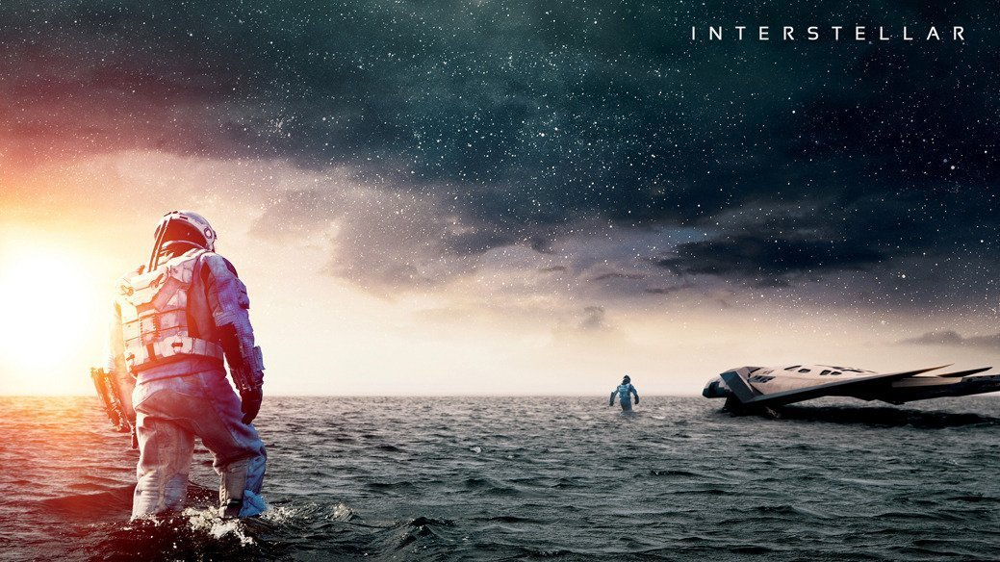
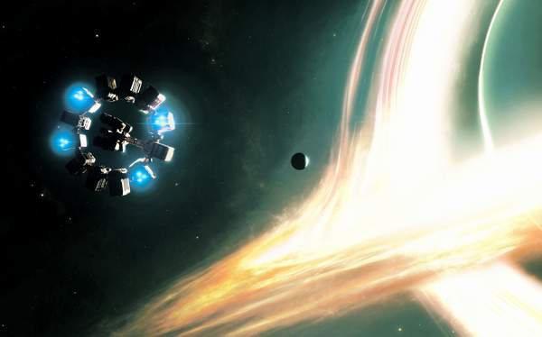
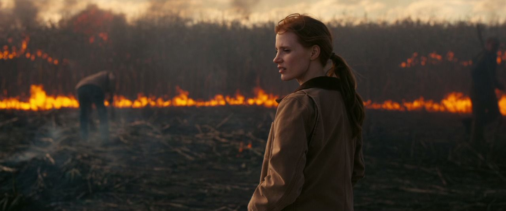
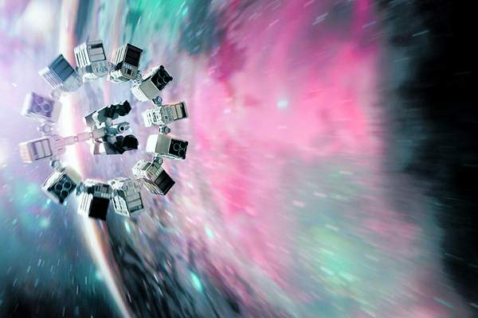

Interstellar Prima data cand am vazut filmul Interstellar , nu pot sa zic ca aveam mari asteptari.
Mi-a recomandat un prieten si am zis ca poate o fi interesant. Ce a urmat a fost un soc pentru mine. Pe toate durata filmului (aproape 3 ore) am stat lipit de ecran
si eram investit emotional pe deplin.
De la povestea plina de twisturi, pana la elementele complexe de stiinta imbinate perfect cu firul narativ si impreuna cu muzica compusa de Hans Zimmer pentru acest film,
pot spune ca Interstellar este filmul perfect si recomand tuturor sa fie impresionati de aceasta capodopera, daca aveti 3 ore sa calatoriti prin univers.
Informatii generale despre film
Genul filmului: Actiune
Data lansarii: 7 noiembrie 2014
Durata: 2 hr 49 min
Regizor: Christopher Nolan
Actori principali: Matthew McConaughey
Jessica Chastain
Anne Hathaway
Mackenzie Foy
Timothée Chalamet
Matt Damon
Michael Caine
Premii: Filmul a fost nominalizat pentru o sumedie de premii, dar probabil cel mai important este premiul Oscar castigat pentru cele mai bune efecte vizuale
O scurta prezentare
În viitor, plantele agricole sunt distruse de o mană, doar porumbul mai putând fi cultivat pentru o perioadă, lucru care duce la prăbușirea civilizației și deșertificarea planetei. Fostul pilot NASA Cooper (Matthew McConaughey) se ocupă de o fermă alături de familia sa.
Murphy (Mackenzie Foy/Jessica Chastain), fiica de 10 ani a lui Cooper, crede că în camera sa se află o fantomă care încearcă să comunice cu ea. Ei descoperă că "fantoma" este o inteligență necunoscută care trimite mesaje codate
prin intermediul undelor gravitaționale, lăsându-le în praf coordonatele binare ale unei instalații secrete NASA condusă de profesorul John Brand (Michael Caine). Brand le dezvăluie că în sistemul solar a apărut o gaură de vierme, aparent creată de o inteligență
extraterestră, prin care se poate ajunge la planete din altă galaxie, planete care le pot da speranța că omenirea va supraviețui în altă parte. "Misiunile Lazar" ale NASA au identificat trei lumi potențial locuibile care orbitează gaura neagră Gargantua: planetele
Miller, Edmunds și Mann, numite după astronauții care au coborât pe ele pentru a le cerceta. Brand îl recrutează pe Cooper ca pilot al navei spațiale Endurance pentru a pleca să recupereze datele celor trei astronauți; dacă una dintre planete este locuibilă, omenirea va merge acolo pe stații spațiale. Plecarea lui Cooper o devastează pe Murphy, cei doi despărțindu-se urât.
Distributia
Distributia filmului Interstellar se poate gasi dand click aici .
Reviewuri
Majoritatea reviewurilor filmului au fost pozitive, acesta avand pe Imdb o medie de 8,7 pe o scara de la 1 la 10
si in prezent, este pe locul 25 in topul celor mai bine clasate filme de pe imdb. Mai multe reviewuri, puteti citi dand click aici .
Interstellar Soundtrack, Trailer si Poster
VIDEO VIDEO

Galerie


